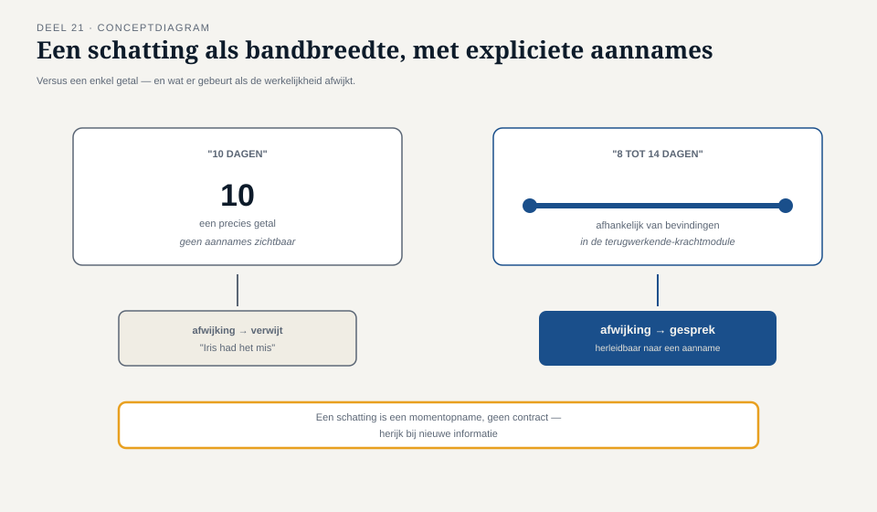

Deel 21 — Testmanagement
Reader · Ductus-cursus Testen en Kwaliteitsborging · niveau 2 (professional) · deel 21 van 30
Leerdoelen
Na dit deel kun je:
- testwerk schatten en begroten op programmaschaal, met erkenning van de onzekerheid die daarbij hoort;
- een testteam samenstellen met complementaire vaardigheden in plaats van uniforme profielen;
- voortgangsinformatie geven zonder perverse prikkels (niveau 1, deel 9) te introduceren;
- bevindingenbeheer op programmaschaal organiseren, met meerdere teams en een externe partij;
- testen binnen een agile programma positioneren, inclusief de spanning met een release-trein (↗ SAFe);
- rapporteren aan een stuurgroep op een manier die past bij niveau 1, deel 9 (een besluitvormend rapport) maar dan op programmaschaal.
Studielast: één dagdeel klassikaal, circa drie uur zelfstudie.
1. "Hoeveel tijd heb je nodig?"
Frank Duiker vraagt Iris, bij de start van elke programma-increment, hoeveel tijd het testwerk gaat kosten. Iris' eerste antwoord — een precies getal in testdagen — bleek na twee increments stelselmatig onjuist, in beide richtingen: soms te veel, soms te weinig. Het probleem zat niet in haar rekenwerk maar in de vraag zelf: testwerk op programmaschaal is inherent onzeker, en een precies getal suggereert een zekerheid die niet bestaat.
Kernzin — Een schatting die als een feit wordt gepresenteerd, wordt bij de eerste afwijking een verwijt. Een schatting die als bandbreedte met aannames wordt gepresenteerd, wordt bij een afwijking een gesprek.
2. Schatten en begroten
2.1 Waarom precisie een valse belofte is
Testwerk hangt af van wat er wordt gevonden — en dat is per definitie onbekend vóór het testen begint (principe 1, niveau 1, deel 1: testen toont aanwezigheid aan, niet afwezigheid, en dus ook niet vooraf hoeveel er te vinden is). Een schatting die geen ruimte laat voor deze onzekerheid, herhaalt de fout van T8: een getal dat zekerheid suggereert die het niet heeft.
2.2 Een betere aanpak
- Bandbreedte in plaats van punt: "tussen de 8 en 14 dagen, afhankelijk van het aantal gevonden bevindingen in de terugwerkende-krachtmodule" in plaats van "10 dagen".
- Aannames expliciet: elke schatting rust op aannames (stabiliteit van de testbasis, beschikbaarheid van testdata, geen onverwachte ketenproblemen) — leg ze vast, zodat een latere afwijking herleidbaar is naar een aanname die niet uitkwam, niet naar "Iris had het mis".
- Herijken bij nieuwe informatie: consistent met niveau 1, deel 7, §5 (risico-inschatting is nooit eenmalig) — een schatting is een momentopname, geen contract.

3. Teamsamenstelling
3.1 Complementaire vaardigheden in plaats van uniforme profielen
Een testteam van vijf mensen met identieke vaardigheden vindt dezelfde soort afwijkingen vijf keer. Een team met complementaire sterktes — iemand met sterke domeinkennis (zoals Nadia's kennis van de werkgeverskant), iemand met automatiseringsvaardigheid (zoals Jelle's rol in deel 17-18), iemand met scherpe exploratory-vaardigheden (niveau 1, deel 6) — vindt een breder scala aan afwijkingen.
3.2 Whole-team versus aparte testfunctie, op schaal
Niveau 1, deel 2 introduceerde de whole-team-benadering. Op programmaschaal betekent dit niet dat elk team zijn eigen, geïsoleerde testkennis opnieuw uitvindt, maar dat testexpertise (Iris en enkele gespecialiseerde testers) verspreid over de teams meewerkt en kennis overdraagt, in plaats van als aparte, centrale kwaliteitscontrole aan het eind te fungeren.
4. Voortgangsinformatie zonder perverse prikkels
4.1 De herhaling van niveau 1, deel 9 — nu op programmaschaal
Elke valkuil uit niveau 1, deel 9 (metrics als doel op zich) is op programmaschaal groter, omdat meer mensen naar hetzelfde dashboard kijken en er meer druk staat om een goed ogend getal te tonen aan Frank Duiker en de stuurgroep.
4.2 Wat wél werkt
Een combinatie van indicatoren (nooit één, consistent met VOICE, deel 11) die samen een eerlijk beeld geven: aantal risico-items volledig getest versus nog open, trend in gevonden bevindingen per risiconiveau, status van de ketentest (deel 16), niet alleen "aantal testgevallen uitgevoerd".
5. Bevindingenbeheer op programmaschaal
5.1 Wat verandert ten opzichte van niveau 1
Niveau 1, deel 8 behandelde het bevindingenproces voor één systeem. Op programmaschaal komt daar een extra laag bovenop: een bevinding kan een enkel team raken, meerdere teams (een gedeelde module), of de keten (deel 16) — en de route die zij volgt, verschilt per categorie.
5.2 Triage op programmaniveau
Een vaste, terugkerende sessie waarin bevindingen die niet binnen één team op te lossen zijn, gezamenlijk worden gewogen: welk team pakt op, welke prioriteit (niveau 1, deel 8, §5.2) krijgt zij op programmaniveau, en — bij een ketenbevinding — wie is de aangewezen eigenaar (deel 16, §4.2).
6. Testen binnen een agile programma
6.1 De spanning met een release-trein
Bij een programma dat volgens een vaste cadans (bijvoorbeeld een release-trein, ↗ SAFe-cursus) levert, ontstaat spanning tussen de wens om grondig te testen (met name bij hoog-risico-items, deel 12) en de wens om op tijd te leveren. Deze spanning is niet op te lossen door harder te werken — zij vraagt om de risicogebaseerde afwegingen uit deel 12 en 18 expliciet te maken vóór de druk toeslaat, niet tijdens.
6.2 Testen als onderdeel van elke increment, niet als aparte fase
Consistent met de hele TMAP-gedachte (deel 11): testen is geen fase die "aan het eind van de trein" gebeurt, maar loopt continu mee, met de gefaseerde pijplijn (deel 18) als technisch fundament.
7. Rapporteren aan een stuurgroep — op programmaschaal
7.1 Dezelfde discipline, groter podium
Niveau 1, deel 9 gaf de structuur voor een besluitvormend rapport: wat is vastgesteld, wat niet, de resterende onzekerheid, een aanbeveling zonder het besluit te nemen. Op programmaschaal, met Frank Duiker en de stuurgroep als publiek, is de verleiding om te vereenvoudigen naar één percentage nog groter dan bij WGP 2.0 — juist omdat er meer data is om in samen te vatten.
7.2 Het rapport dat Iris nu schrijft
In plaats van "80% van de testgevallen geslaagd" rapporteert Iris per risico-item (deel 12) de status, met een expliciete koppeling naar VOICE (deel 11): welke waarde staat op het spel, wat weten we, wat niet. Frank Duikers vraag om "een percentage" (deel 11, opdracht 11.5) krijgt hiermee eindelijk een antwoord dat recht doet aan wat hij werkelijk wil weten.
8. TMAP-lens
Hoe heet dit daar. Testmanagement is in TMAP minder een aparte rol dan in de klassieke ISTQB-lijn (niveau 1, deel 2, §6.1) — de bouwstenen (deel 11) worden verondersteld door het team gezamenlijk gedragen te worden, met een lichte coördinerende rol in plaats van een zware managementlaag.
Waar het werkelijk anders is. Voor een programma van deze schaal, met een externe ketenpartner en toezichtgevoelige risico's, blijkt een lichte coördinerende rol niet altijd voldoende — Iris' rol als quality lead combineert daarom bewust elementen van beide lijnen, opnieuw een mengvorm zoals in deel 11 beargumenteerd.
Kernbegrippen
schatten met bandbreedte en expliciete aannames · complementaire teamsamenstelling · voortgangsinformatie zonder perverse prikkels · bevindingentriage op programmaniveau · testen binnen een release-trein · besluitvormend rapport aan een stuurgroep, op programmaschaal
Samenvatting in vijf zinnen
- Een schatting die als feit wordt gepresenteerd, wordt bij afwijking een verwijt; een schatting als bandbreedte met expliciete aannames wordt een gesprek.
- Een testteam met complementaire vaardigheden vindt een breder scala aan afwijkingen dan een team met identieke profielen.
- Voortgangsinformatie op programmaschaal is extra kwetsbaar voor perverse prikkels, juist omdat meer mensen naar hetzelfde dashboard kijken.
- Een bevinding die meerdere teams of de keten raakt, vraagt om een aparte triageroute met een aangewezen eigenaar — anders herhaalt zij het patroon van T5 en T7.
- Frank Duikers vraag om "een percentage" krijgt uiteindelijk een eerlijker antwoord via VOICE en de teststrategiematrix dan via het getal dat hij aanvankelijk vroeg.